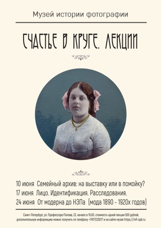
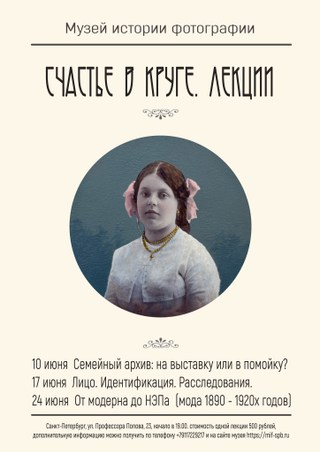

«Счастье в круге»
«Счастье в круге»
«Парадокс снимков в том, что они, пройдя через время, переживают своих героев. Этих людей давно уже нет, но в то же время мы смотрим — и вот они, веселы, счастливы, живы. Мы можем почувствовать их почти магическую способность противостоять времени и связанным с ним физическим изменениям, старые фото словно отменяют старение и саму смерть. Идентифицируясь с героями этих снимков, мы — пусть на мгновение и чаще не осознавая этого — можем ощутить себя бессмертными».
Есть предметы, которые приобретают ценность лишь старея. При создании их стоимость исчислялась несколькими рублями и имела утилитарное назначение — их дарили по случаю на память. Их делали не часто, тоже по случаю: рождения и крещения, учебы и выпуска из гимназии, обручения, свадьбы, общих семейных торжеств, получения нового чина или роли. Их отдавали в виде визитных карточек, а с конца XIX века посылали по почте в виде открытых писем — родственникам и друзьям, возлюбленным и поклонникам, иногда использовали как документ, удостоверяющий личность, например, проездной на железной дороге.
Речь идет о студийных фотографиях более чем столетней давности. Они были разного формата. Портрет-визит — маленькая фотокарточка, наклеенная на бланк, картонную подложку с указанием имени владельца и адреса фотоателье, размером примерно с современную карточку, которую мы подаем при деловой встрече. Кабинет-портрет, тоже наклеенный на специальный бланк, который ставили на рабочий стол. Будуар, висевший на стене в интимной части дома. Большеформатные фотографии, оформлявшиеся в пышные рамы — для гостиной.
Все эти пожелтевшие, потертые снимки, со следами старения и угасания обладают особым обаянием. «Моно-но-аваре», сказали бы японцы — «печальное очарование вещей», красота былого. В России, в отличие от Европы, где из поколения в поколение передаются семейный архивы, не подписанный снимок, переживший своих хозяев, революции, войны, репрессии и попавший на прилавок какого-нибудь букинистического или антикварного магазина должен пользоваться не меньшим уважением и вниманием, чем, скажем, мебель арт-деко. Почему? Да потому, что он в большей степени, чем какой-нибудь стул помогает «залатать дыры» в семейной истории. Психологи считают, что рассматривая снимки, мы вольно или невольно «вживаемся в них», пытаясь понять, «достроить» судьбу изображенных людей. Глядя на эти портреты, мы выходим за рамки привычного восприятия реальности и, погружаясь в чужую историю, осмысливая её, обретаем свою собственную идентичность. Отсюда такое пристальное внимание у наших современников к собраниям старинных снимков из музеев и частных коллекций.
В проект включены около 50 подлинных фотографических работ разного формата, периода 1900–1920-х годов, выполненных в фотостудиях разных городов и хранящихся в частных коллекциях, а также в Музее истории фотографии. Все работы объединяет их оформление — круг, тондо.
Использовать для живописного портрета круглую форму начали еще в древнем Риме. Восковую отливку, сделанную с посмертной гипсовой маски, вставляли в широкую круглую раму, в которой портрет выглядел как медальон на щите. В эпоху Возрождения и позднее эта форма использовалась для парадного портрета.
В большинстве случаев мы не знаем судеб людей, изображенных на снимках. Если Вы располагаете какими-либо сведениями о лицах, запечатленных на фотографиях, просим связаться с организаторами проекта.
 
